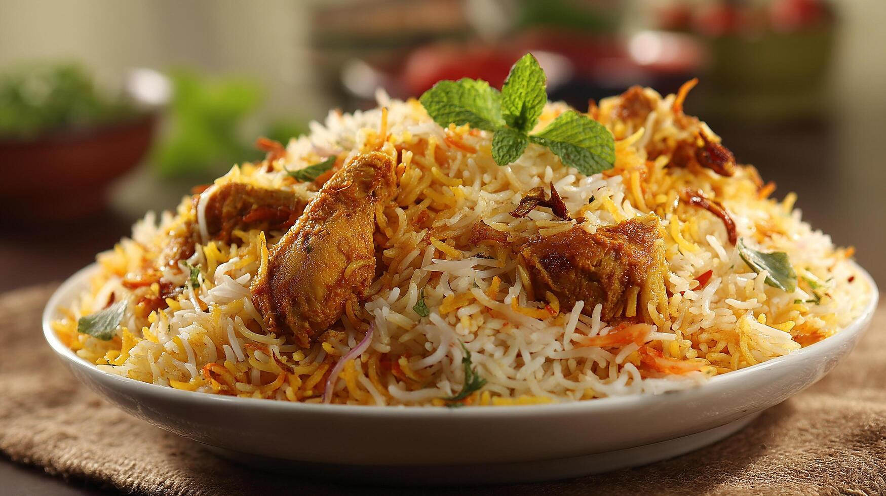

Tomato Basil Pasta
Simple, fresh pasta with ripe tomatoes and basil. Ready in under 30 minutes.
View RecipeDiscover, save, and follow great recipes—all in one place.
Browse RecipesBecause the best cooking happens when you’re not squinting at a tiny screen or scrolling through a novel to find the next step. Recipe Studio keeps things simple: one clear list of ingredients, one clear list of steps, and a layout that works whether you’re in the kitchen with your phone or at the table with your laptop. No fluff, no pop-ups—just recipes you can actually follow.
"A recipe isn’t just a list of steps—it’s an invitation to slow down, pay attention, and make something with your hands."
Simple, fresh pasta with ripe tomatoes and basil. Ready in under 30 minutes.
View Recipe
Classic pizza with tomato base, fresh mozzarella, and basil. Perfect for pizza night.
View Recipe
Layered rice and marinated chicken cooked dum-style. A Hyderabad classic with saffron and herbs.
View RecipeQuick ideas to get better results in the kitchen.
Use level measures for flour and spoon measures for liquids for consistent results.
Read the full recipe before you start and prep ingredients in the order they’re used.
Taste and adjust seasoning near the end of cooking—salt and acid can transform a dish.
Let your pan heat fully before adding oil or food—prevents sticking and builds better browning.